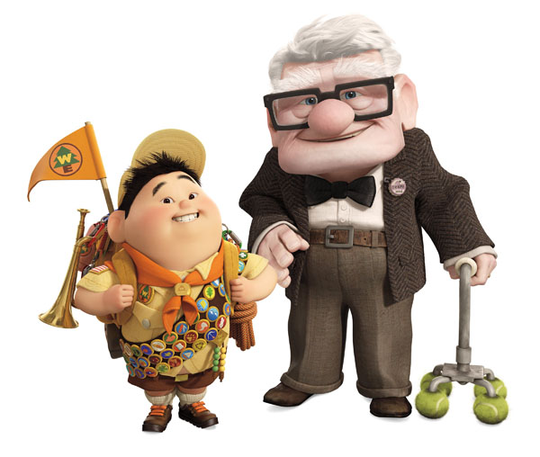

Também conhecida como Pixar Animation Studios, é uma empresa de animação
digital norte-americana pertencente à Walt Disney Company. É especializada
em alta tecnologia de computação gráfica.
Toy Story: É conhecido por ser o primeiro longa-metragem dos
estúdios Pixar e também o primeiro da historia do cinema totalmente
feito por computação gráfica.
2001
Monstros S. A.: O filme conta a história sobre monstros que assustam
crianças para conseguir seus gritos e gerar energia para o seu mundo.
2003
Procurando Nemo: Vencedor do Oscar de Melhor Filme de Animação,
apresenta um mundo onde peixes e outros seres marinhos vivem
numa sociedade semelhante à de seres humanos.
2004
Os Incríveis: Foi indicado a 4 Oscars, e venceu 2: Melhor filme
de animação e Melhor Edição de Som. Conta a história de Beto e
Helena Pera, seres humanos dotados de super poderes, que se casaram
e agora têm três filhos: Violeta, Flecha e o bebê Zezé, na cidade
de Metroville
2007
Ratatouille: Conta a história de Rémy, um rato vivendo em paris que
sonha em se tornar um chef de cozinha.
Grupo de Pesquisa Pixar
O Grupo de Pesquisa Pixar foi criado em 2004 com o propósito de:
WALL-E: Conta a história de um robô chamado WALL-E,
criado no ano de 2100 para limpar a terra coberta de lixo

O enredo conta as aventuras que Carl Fredericksen (um idoso
viúvo que sonha em se mudar para o Paraíso das Cachoeiras, na
Venezuela) enfrenta ao conhecer Russell, (um garoto escoteiro
amante da natureza com seu sonho de protegê-la); Muntz, (o explorador
difamado buscando restabelecer sua reputação); Kevin, (uma ave tropical);
e Dug, (um golden retriever falante).VALENTE: Merida é uma habilidosa arqueira e a impetuosa filha do Rei Fergus
e da Rainha Elinor. Determinada a trilhar seu proprio destino, Merida desafia
um costume ancestral, se negando a casar com o primôgenito de um dos quatro clãs.Topo